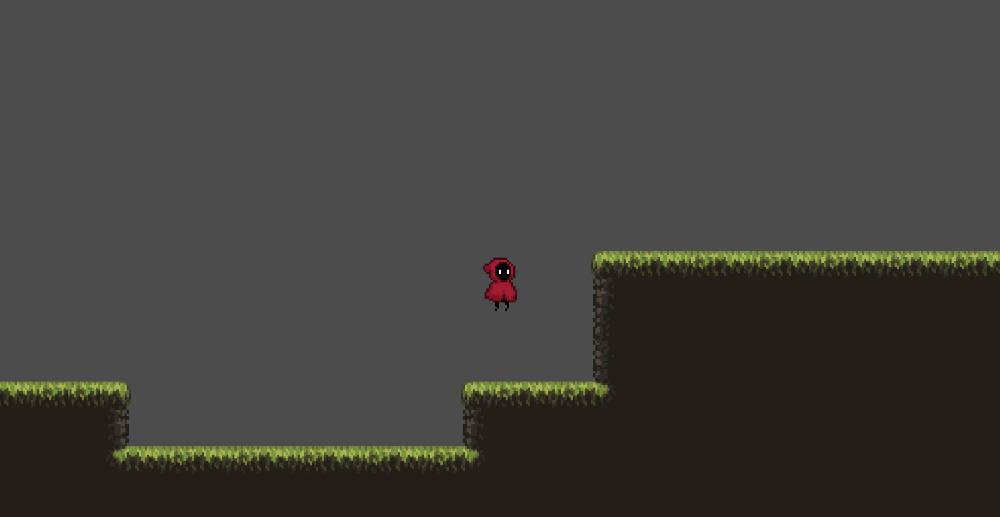
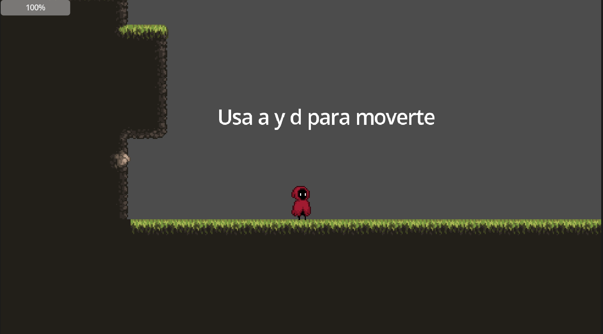
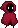
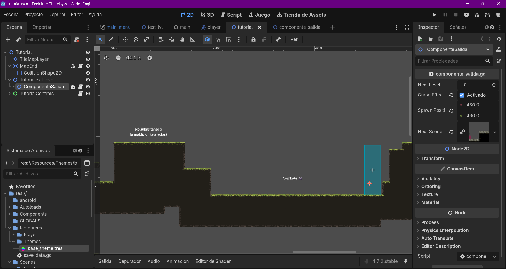

01 / El descenso
Todo tesoro
exige un precio
Cada salto te lleva más lejos de la superficie. Aprende los caminos del abismo, domina sus plataformas y atraviesa la oscuridad hasta el premio final.
Género
Plataformas
Misión
El Grial
Motor
Godot

02 / Siente el movimiento
Prueba el salto
Usa A/D o las flechas para moverte. Pulsa W, espacio o el control de salto.

Meta
03 / Tras el abismo
Hecho nivel
a nivel
Un proyecto independiente construido en Godot, donde cada plataforma, caída y rincón oscuro forma parte del viaje.

04 / Contacto
Escribe desde
la superficie
¿Ideas, errores encontrados o ganas de colaborar en Into the Abbys? Manda tu mensaje y llegará directo al buzón del desarrollador.